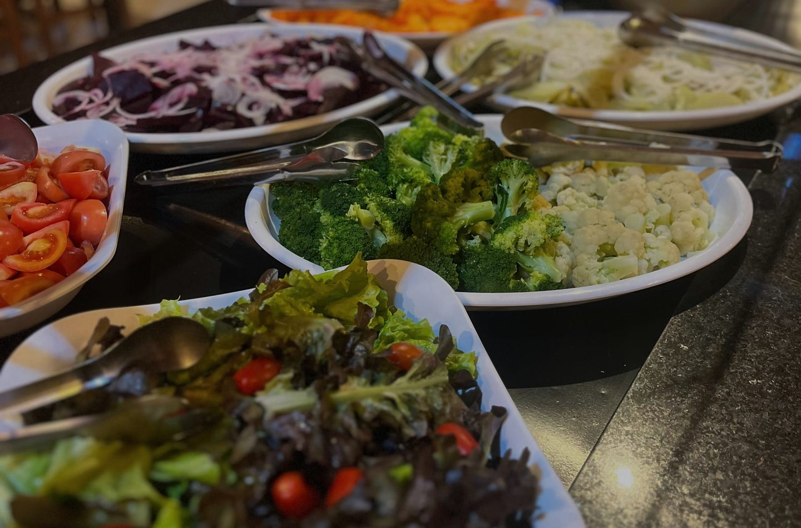
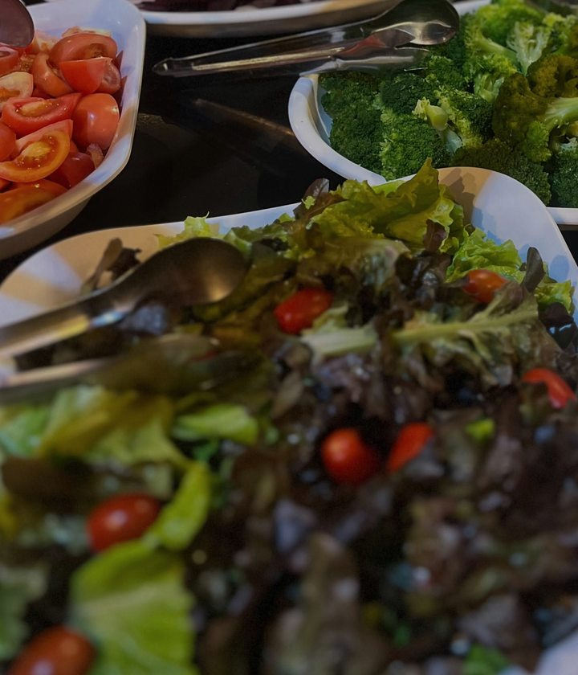

01 À mesa
Almoço de domingo
Reúna a família ou os amigos e reserve uma mesa para o almoço de domingo.
Reservar almoço ↗
Restaurante italiano e eventos · Içara, SC
Almoço de domingo, jantar de quarta e encontros para celebrar. Sua mesa tem lugar no Nono Tchillo.
Buffet da casa · @nonotchillo
As ocasiões da casa
Da cozinha ao salão
Do buffet ao salão, veja um pouco da casa pelo olhar de quem põe a mesa.

Reservas
Almoço, jantar ou evento particular.
Informe a data e o número de pessoas.
Combine os detalhes da sua reserva.
Içara · Santa Catarina